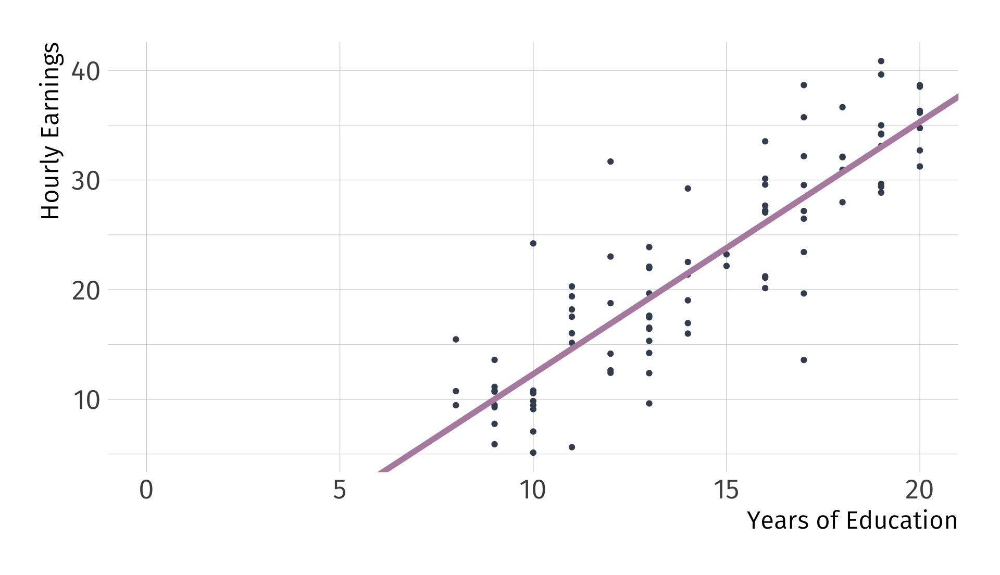
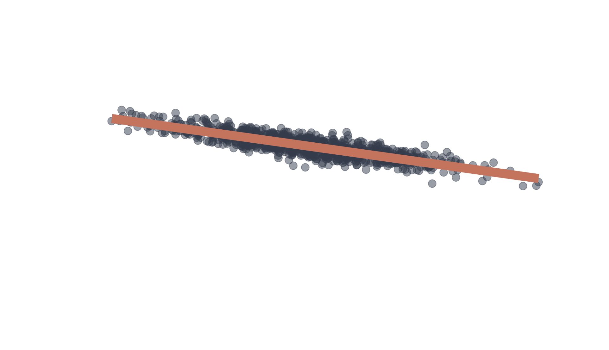
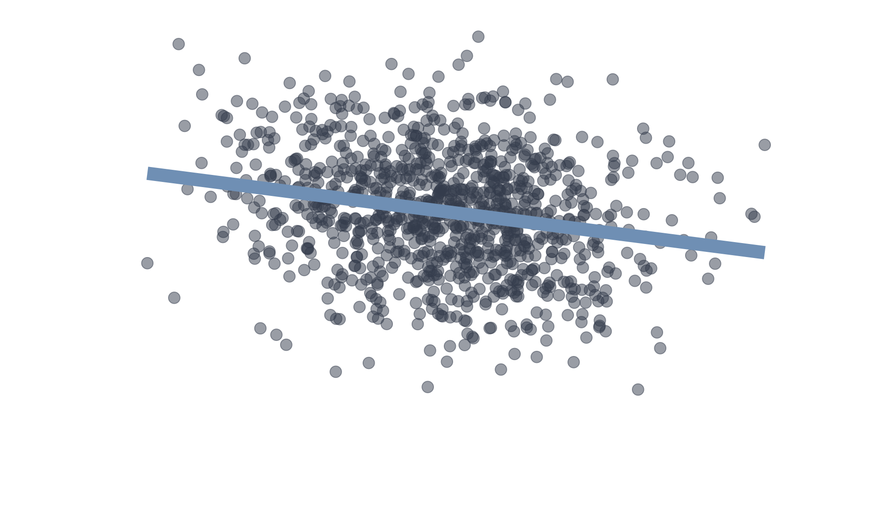
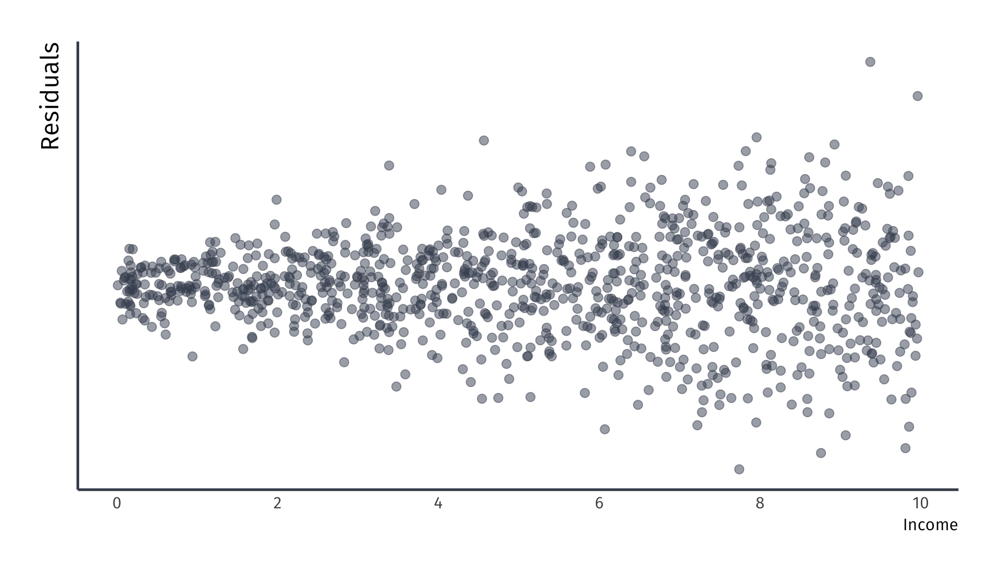

Simple linear regression II
EC 320, Set 05
Spring 2023
Housekeeping
PS03:
- Due (next) Tuesday at 11:59p
- Covers remaining a bunch of OLS stuff up to today
LA04:
- Due Friday at 5:00p
Reading: (up to this point)
ItE: R, 1, 2 MM: 1, 2
Prologue
Last Time
We considered a simple linear regression of \(Y_i\) on \(X_i\):
\[ Y_i = \beta_1 + \beta_2X_i + u_i. \]
- \(\beta_1\) and \(\beta_2\) are population parameters that describe the “true” relationship between \(X_i\) and \(Y_i\).
- Problem: We don’t know the population parameters. The best we can do is to estimate them.
Last Time
We derived the OLS estimator by minimizing \(\sum_{i=1}^n \hat{u}_i^2\).
Intercept:
\[ \hat{\beta}_1 = \bar{Y} - \hat{\beta}_2 \bar{X} \]
Slope:
\[ \begin{aligned} \hat{\beta}_2 &= \dfrac{\sum_{i=1}^n (Y_i - \bar{Y})(X_i - \bar{X})}{\sum_{i=1}^n (X_i - \bar{X})^2} \end{aligned} \]
We used these formulas to obtain estimates of the parameters \(\beta_1\) and \(\beta_2\) in a regression of \(Y_i\) on \(X_i\).
Last Time
With the OLS estimates, we constructed a regression line:
\[ \hat{Y_i} = \hat{\beta}_1 + \hat{\beta}_2X_i. \]
- \(\hat{Y_i}\) are predicted or fitted values of \(Y_i\).
- Think of \(\hat{Y_i}\) as an estimated average value of \(Y_i\) given a particular \(X_i\).
OLS still produces prediction errors: \(\hat{u}_i = Y_i - \hat{Y_i}\).
- Put differently, there is a part of \(Y_i\) we can explain and a part we cannot: \(Y_i = \hat{Y_i} + \hat{u}_i\).
Review
What is the equation for the regression model estimated below?
Review
The estimated intercept is -10.7. What does this tell us?

With zero years of education, estimate hourly earnings would be –$10.44
Review
The estimated slope is 2.3. How do we interpret it?

For each additional year of schooling, hourly earnings increase by $2.32
OLS properties
OLS Properties
OLS has three important properties:
1. Residuals sum to zero: \(\sum_{i=1}^n \hat{u}_i = 0\).
2. The sample covariance between the independent variable and the residuals is zero: \(\sum_{i=1}^n X_i \hat{u}_i = 0\).
3. The point \((\bar{X}, \bar{Y})\) is always on the regression line.
PS03 includes proving 1. and 2. in the upcoming problem set.
Property 3. (proof)
The point \((\bar{X}, \bar{Y})\) is always on the regression line.
- Start with the regression line: \(\hat{Y_i} = \hat{\beta}_1 + \hat{\beta}_2X_i\).
- \(\hat{Y_i} = \bar{Y} - \hat{\beta}_2 \bar{X} + \hat{\beta}_2X_i\).
- Plug in \(\bar{X}\) for \(X_i\):
\[ \begin{aligned} \hat{Y_i} &= \bar{Y} - \hat{\beta}_2 \bar{X} + \hat{\beta}_2\bar{X} \\ &= \bar{Y}. \end{aligned} \]
Goodness of fit
Goodness of Fit
Regression 1 vs. Regression 2
- Same slope.
- Same intercept.
Q: Which fitted regression line “explains”1 the data better?


Goodness of Fit
Regression 1 vs. Regression 2
The coefficient of determination, \(R^2\), is the fraction of the variation in \(Y_i\) “explained” by \(X_i\).
- \(R^2 = 1 \implies X_i\) explains all of the variation in \(Y_i\).
- \(R^2 = 0 \implies X_i\) explains none of the variation in \(Y_i\).


Explained and unexplained variation
Residuals remind us that there are parts of \(Y_i\) we can’t explain.
\[ Y_i = \hat{Y_i} + \hat{u}_i \]
- Sum the above, divide by \(n\), and use the fact that OLS residuals sum to zero to get:
\[ \bar{\hat{u}} = 0 \implies \bar{Y} = \bar{\hat{Y}} \]
Explained and unexplained variation
Total Sum of Squares (TSS) measures variation in \(Y_i\):
\[ {\color{#BF616A} \text{TSS}} \equiv \sum_{i=1}^n (Y_i - \bar{Y})^2 \]
- TSS can be decomposed into explained and unexplained variation.
Explained Sum of Squares (ESS) measures the variation in \(\hat{Y_i}\):
\[ {\color{#EBCB8B} \text{ESS}} \equiv \sum_{i=1}^n (\hat{Y_i} - \bar{Y})^2 \]
Residual Sum of Squares (RSS) measures the variation in \(\hat{u}_i\):
\[ {\color{#D08770} \text{RSS}} \equiv \sum_{i=1}^n \hat{u}_i^2 \]
Goal: Show that \({\color{#BF616A} \text{TSS}} = {\color{#EBCB8B} \text{ESS}} + {\color{#D08770} \text{RSS}}\).
Goal: Show that \({\color{#BF616A} \text{TSS}} = {\color{#EBCB8B} \text{ESS}} + {\color{#D08770} \text{RSS}}\).
Step 1: Plug \(Y_i = \hat{Y_i} + \hat{u}_i\) into \({\color{#BF616A} \text{TSS}}\).
\[ \begin{align*} {\color{#BF616A} \text{TSS}} &= \sum_{i=1}^n (Y_i - \bar{Y})^2 \\ &= \sum_{i=1}^n ([\hat{Y_i} + \hat{u}_i] - [\bar{\hat{Y}} + \bar{\hat{u}}])^2 \end{align*} \]
Goal: Show that \({\color{#BF616A} \text{TSS}} = {\color{#EBCB8B} \text{ESS}} + {\color{#D08770} \text{RSS}}\).
Step 2: Recall that \(\bar{\hat{u}} = 0\) & \(\bar{Y} = \bar{\hat{Y}}\).
\[ \begin{align*} {\color{#BF616A} \text{TSS}} &= \sum_{i=1}^n \left( [\hat{Y_i} - \bar{Y}] + \hat{u}_i \right)^2 \\ &= \sum_{i=1}^n \left( [\hat{Y_i} - \bar{Y}] + \hat{u}_i \right) \left( [\hat{Y_i} - \bar{Y}] + \hat{u}_i \right) \\ &= \sum_{i=1}^n (\hat{Y_i} - \bar{Y})^2 + \sum_{i=1}^n \hat{u}_i^2 + 2 \sum_{i=1}^n \left( (\hat{Y_i} - \bar{Y})\hat{u}_i \right) \end{align*} \]
Goal: Show that \({\color{#BF616A} \text{TSS}} = {\color{#EBCB8B} \text{ESS}} + {\color{#D08770} \text{RSS}}\).
Step 2: Recall that \(\bar{\hat{u}} = 0\) & \(\bar{Y} = \bar{\hat{Y}}\).
\[ \begin{align*} {\color{#BF616A} \text{TSS}} &= \sum_{i=1}^n \left( [\hat{Y_i} - \bar{Y}] + \hat{u}_i \right)^2 \\ &= \sum_{i=1}^n \left( [\hat{Y_i} - \bar{Y}] + \hat{u}_i \right) \left( [\hat{Y_i} - \bar{Y}] + \hat{u}_i \right) \\ &= {\color{#EBCB8B}{\sum_{i=1}^n (\hat{Y_i} - \bar{Y})^2}} + {\color{#D08770}{\sum_{i=1}^n \hat{u}_i^2}} + 2 \sum_{i=1}^n \left( (\hat{Y_i} - \bar{Y})\hat{u}_i \right) \end{align*} \]
Step 3: Notice ESS and RSS.
Goal: Show that \({\color{#BF616A} \text{TSS}} = {\color{#EBCB8B} \text{ESS}} + {\color{#D08770} \text{RSS}}\).
Step 2: Recall that \(\bar{\hat{u}} = 0\) & \(\bar{Y} = \bar{\hat{Y}}\).
\[ \begin{align*} {\color{#BF616A} \text{TSS}} &= \sum_{i=1}^n \left( [\hat{Y_i} - \bar{Y}] + \hat{u}_i \right)^2 \\ &= \sum_{i=1}^n \left( [\hat{Y_i} - \bar{Y}] + \hat{u}_i \right) \left( [\hat{Y_i} - \bar{Y}] + \hat{u}_i \right) \\ &= {\color{#EBCB8B}{\sum_{i=1}^n (\hat{Y_i} - \bar{Y})^2}} + {\color{#D08770}{\sum_{i=1}^n \hat{u}_i^2}} + 2 \sum_{i=1}^n \left( (\hat{Y_i} - \bar{Y})\hat{u}_i \right) \\ &= {\color{#EBCB8B} \text{ESS}} + {\color{#D08770} \text{RSS}} + 2 \sum_{i=1}^n \left( (\hat{Y_i} - \bar{Y})\hat{u}_i \right) \end{align*} \]
Goal: Show that \({\color{#BF616A} \text{TSS}} = {\color{#EBCB8B} \text{ESS}} + {\color{#D08770} \text{RSS}}\).
Step 4: Simplify.
\[ \begin{align*} {\color{#BF616A} \text{TSS}} &= {\color{#EBCB8B} \text{ESS}} + {\color{#D08770} \text{RSS}} + 2 \sum_{i=1}^n \left( (\hat{Y_i} - \bar{Y})\hat{u}_i \right) \\ &= {\color{#EBCB8B} \text{ESS}} + {\color{#D08770} \text{RSS}} + 2 \sum_{i=1}^n \hat{Y_i}\hat{u}_i - 2 \bar{Y}\sum_{i=1}^n \hat{u}_i \end{align*} \]
Step 5: Shut down the last two terms. Notice that
\[ \begin{align*} 2 \sum_{i=1}^n \hat{Y_i}\hat{u}_i - 2 \bar{Y}\sum_{i=1}^n \hat{u}_i = 0 \end{align*} \]
Which you will prove to be true in PS03
Some visual intuition makes all the math seem a lot simpler
Let’s regress mpg on wt using a new dataset, mtcars
\[ {\color{#ffffff} \text{TSS} \equiv \sum_{i=1}^n (Y_i - \bar{Y})^2} \]
\[ {\color{#ffffff} \text{TSS} \equiv \sum_{i=1}^n (Y_i - \bar{Y})^2} \]
\[ {\color{#A3BE8C} \overline{\text{MPG}_i}} = 20.09 \]
\[ {\color{#ffffff} \text{TSS} \equiv \sum_{i=1}^n (Y_i - \bar{Y})^2} \]
\[ {\color{#BF616A} \text{TSS}} \equiv \sum_{i=1}^n (Y_i - \bar{Y})^2 \]
\[ {\color{#ffffff} \overline{\text{Crime}_i} = 21.05} \]
\[ {\color{#B48EAD} \widehat{\text{Crime}_i}} = 18.41 + 1.76 \cdot \text{Police}_i \]
\[ {\color{#ffffff} \text{ESS} \equiv \sum_{i=1}^n (\hat{Y_i} - \bar{Y})^2} \]
\[ {\color{#EBCB8B} \text{ESS}} \equiv \sum_{i=1}^n (\hat{Y_i} - \bar{Y})^2 \]
\[ {\color{#ffffff} \widehat{\text{Crime}_i} = 18.41 + 1.76 \cdot \text{Police}_i} \]
\[ {\color{#D08770} \text{RSS}} \equiv \sum_{i=1}^n \hat{u}_i^2 \]
\[ {\color{#ffffff} \text{ESS} \equiv \sum_{i=1}^n (\hat{Y_i} - \bar{Y})^2} \]
\[ {\color{#BF616A} \text{TSS}} \equiv \sum_{i=1}^n (Y_i - \bar{Y})^2 \]
\[ {\color{#EBCB8B} \text{ESS}} \equiv \sum_{i=1}^n (\hat{Y_i} - \bar{Y})^2 \]
\[ {\color{#D08770} \text{RSS}} \equiv \sum_{i=1}^n \hat{u}_i^2 \]
Goodness of fit
What percentage of the variation in our \(Y_i\) is apparently explained by our model? The \(R^2\) term represents this percentage.
Total variation is represented by TSS and our model is capturing the ‘explained’ sum of squares, ESS.
Taking a simple ratio reveals how much variation our model explains.
\(R^2 = \frac{{\color{#EBCB8B} \text{ESS}}}{{\color{#BF616A} \text{TSS}}}\) varies between 0 and 1
\(R^2 = 1 - \frac{{\color{#D08770} \text{RSS}}}{{\color{#BF616A} \text{TSS}}}\), 100% less the unexplained variation
\(R^2\) is related to the correlation between the actual values of \(Y\) and the fitted values of \(Y\). Can show that \(R^2 = (r_{Y, \hat{Y}})^2\).
Goodness of fit
So what? In the social sciences, low \(R^2\) values are common.
Low \(R^2\) doesn’t mean that an estimated regression is useless.
- In a randomized control trial, \(R^2\) is usually less than 0.1
High \(R^2\) doesn’t necessarily mean you have a “good” regression.
- Worries about selection bias and omitted variables still apply
- Some ‘powerfully high’ \(R^2\) values are the result of simple accounting exercises, and tell us nothing about causality
Units of measurement
PS03: Demeaning
Suppose we have the following model:
\[ Y_i = \beta_0 + \beta_1 X_i + u_i \]
Before running a regression of \(Y_i\) on \(X_i\), you decided to demean each variable by subtracting off the mean from each observation. This gave you \(\tilde{Y_i} = Y_i - \bar{Y}\) and \(\tilde{X_i} = X_i - \bar{X}\). The estimation equation becomes:
\[ \tilde{Y_i} = \alpha_0 + \alpha_1 \tilde{X_i} + v_i \]
where \(v_i = u_i - \bar{u_i}\).
Show: \(\alpha_0 = 0\) and \(\alpha_1 = \beta_1\)
Ex. Returns to schooling
Returns to Schooling
Policy Question: How much should the state subsidize higher education?
- Could higher education subsidies increase future tax revenue?
- Could targeted subsidies reduce income and racial inequality?
- Are there positive externalities associated with higher education?
Empirical Question: What is the return to an additional year of education?1
Returns to Schooling
Step 1: Write down the population model.
\[ \log(\text{Earnings}_i) = \beta_1 + \beta_2\text{Education}_i + u_i \]
Step 2: Find data.
- Source: Blackburn and Neumark (1992).
Step 3: Run a regression using OLS.
\[ \log(\hat{\text{Earnings}_i}) = \hat{\beta}_1 + \hat{\beta}_2\text{Education}_i \]
Aside: Logarithms
Aside: Logarithms
Logarithms are functions are convenient for numbers that span several orders of magnitude
The natural logarithm
Inverse function to the exponential function with base \(e\) defined as:
\[ \log{x} \quad \textit{or} \quad \ln{x} \]
Simplifies interpretation and stabilize relationships between variables.
Aside: Logarithms
Our example model: \[\log(\text{Earnings}_i) = \beta_1 + \beta_2\text{Education}_i + u_i\]
Natural logarithm is applied to the dependent variable (Earnings).
Estimates how the percentage change in earnings. \(\beta_2\) represents the percentage change in earnings for a one-unit increase in education.
Return to our example
Returns to Schooling
\(\log(\hat{\text{Earnings}_i})\) \(=\) 5.97 \(+\) 0.06 \(\times\) \(\text{Education}_i\).

Returns to Schooling
Additional year of school associated with a 6% increase in earnings.

Returns to Schooling
\(R^2\) \(=\) 0.097.

Returns to Schooling
Education explains 9.7% of the variation in wages.
Returns to Schooling
What must we assume to interpret \(\hat{\beta}_2\) \(=\) 0.06 as the return to schooling?

Classical assumptions
Residuals vs. Errors
The most important assumptions concern the error term \(u_i\).
Important: An error \(u_i\) and a residual \(\hat{u}_i\) are related, but different.
Error:
Difference between the wage of a worker with 16 years of education and the expected wage with 16 years of education.
Residual:
Difference between the wage of a worker with 16 years of education and the average wage of workers with 16 years of education.
Population vs. sample
Residuals vs. Errors
A residual tells us how a worker’s wages compare to the average wages of workers in the sample with the same level of education.
Residuals vs. Errors
A residual tells us how a worker’s wages compare to the average wages of workers in the sample with the same level of education.
Residuals vs. Errors
An error tells us how a worker’s wages compare to the expected wages of workers in the population with the same level of education.
Classical Assumptions of OLS
A1. Linearity: The population relationship is linear in parameters with an additive error term.
Linearity (A1.)
The population relationship is linear in parameters with an additive error term.
Examples
- \(\text{Wage}_i = \beta_1 + \beta_2 \text{Experience}_i + u_i\)
- \(\log(\text{Happiness}_i) = \beta_1 + \beta_2 \log(\text{Money}_i) + u_i\)
- \(\sqrt{\text{Convictions}_i} = \beta_1 + \beta_2 (\text{Early Childhood Lead Exposure})_i + u_i\)
- \(\log(\text{Earnings}_i) = \beta_1 + \beta_2 \text{Education}_i + u_i\)
Linearity (A1.)
The population relationship is linear in parameters with an additive error term.
Violations
- \(\text{Wage}_i = (\beta_1 + \beta_2 \text{Experience}_i)u_i\)
- \(\text{Consumption}_i = \frac{1}{\beta_1 + \beta_2 \text{Income}_i} + u_i\)
- \(\text{Population}_i = \frac{\beta_1}{1 + e^{\beta_2 + \beta_3 \text{Food}_i}} + u_i\)
- \(\text{Batting Average}_i = \beta_1 (\text{Wheaties Consumption})_i^{\beta_2} + u_i\)
Classical Assumptions of OLS
A1. Linearity: The population relationship is linear in parameters with an additive error term.
A2. Sample Variation: There is variation in \(X\).
Sample Variation (A2.)
There is variation in \(X\).
Example
Sample Variation (A2.)
There is variation in \(X\).
Violation
As we will see later, sample variation matters for inference as well.
Classical Assumptions of OLS
A1. Linearity: The population relationship is linear in parameters with an additive error term.
A2. Sample Variation: There is variation in \(X\).
A3. Exogeniety: The \(X\) variable is exogenous
Exogeniety (A3.)
Assumption
The \(X\) variable is exogenous:
\[ \mathop{\mathbb{E}}\left( u|X \right) = 0 \]
The assignment of \(X\) is effectively random.
Implication: no selection bias or omitted variable bias
Exogeniety (A3.)
Assumption
The \(X\) variable is exogenous:
\[ \mathop{\mathbb{E}}\left( u|X \right) = 0 \]
Example
In the labor market, an important component of \(u\) is unobserved ability.
- \(\mathop{\mathbb{E}}\left( u|\text{Education} = 12 \right) = 0\) and \(\mathop{\mathbb{E}}\left( u|\text{Education} = 20 \right) = 0\).
- \(\mathop{\mathbb{E}}\left( u|\text{Experience} = 0 \right) = 0\) and \(\mathop{\mathbb{E}}\left( u|\text{Experience} = 40 \right) = 0\).
- Do you believe this?
Graphically…
Valid exogeniety, i.e., \(\mathop{\mathbb{E}}\left( u \mid X \right) = 0\)
Invalid exogeniety, i.e., \(\mathop{\mathbb{E}}\left( u \mid X \right) \neq 0\)
When can we trust OLS?
Bias
An estimator is biased if its expected value is different from the true population parameter.
Unbiased estimator: \(\mathop{\mathbb{E}}\left[ \hat{\beta} \right] = \beta\)
Biased estimator: \(\mathop{\mathbb{E}}\left[ \hat{\beta} \right] \neq \beta\)
Required Assumptions
A1. Linearity: The population relationship is linear in parameters with an additive error term.
A2. Sample Variation: There is variation in \(X\).
A3. Exogeniety: The \(X\) variable is exogenous
☛ (3) implies random sampling. Without it, our external validity becomes uncertain.1
Let’s prove unbiasedness of OLS
Proving unbiasedness of simple OLS
Suppose we have the following model
\[ Y_i = \beta_1 + \beta_2 X_i + u_i \]
The slope parameter follows as:
\[ \hat{\beta}_2 = \frac{\sum (x_i - \bar{x})(y_i - \bar{y})}{\sum(x_i - \bar{x})^2} \]
(As shown in section 2.3 in ItE) that the estimator \(\hat{\beta_2}\), can be broken up into a nonrandom and a random component:
Proving unbiasedness of simple OLS
Substitute for \(y_i\):
\[ \hat{\beta}_2 = \frac{\sum((\beta_1 + \beta_2x_i + u_i) - \bar{y})(x_i - \bar{x})}{\sum(x_i - \bar{x})^2} \]
Substitute \(\bar{y} = \beta_1 + \beta_2\bar{x}\):
\[ \hat{\beta}_2 = \frac{\sum(u_i(x_i - \bar{x}))}{\sum(x_i - \bar{x})^2} + \frac{\sum(\beta_2x_i(x_i - \bar{x}))}{\sum(x_i - \bar{x})^2} \]
The non-random component, \(\beta_2\), is factored out:
\[ \hat{\beta}_2 = \frac{\sum(u_i(x_i - \bar{x}))}{\sum(x_i - \bar{x})^2} + \beta_2\frac{\sum(x_i(x_i - \bar{x}))}{\sum(x_i - \bar{x})^2} \]
Proving unbiasedness of simple OLS
Observe that the second term is equal to 1. Thus, we have:
\[ \hat{\beta}_2 = \beta_2 + \frac{\sum(u_i(x_i - \bar{x}))}{\sum(x_i - \bar{x})^2} \]
Taking the expectation,
\[ \mathrm{E}[\hat{\beta_2}] = \mathrm{E}[\beta] + \mathrm{E}\left[\frac{\sum \hat{u_i} (x_i - \bar{x})}{\sum(x_i - \bar{x})^2} \right] \]
By Rules 01 and 02 of expected value and A3:
\[ \begin{equation*} \mathrm{E}[\hat{\beta_2}] = \beta + \frac{\sum \mathrm{E}[\hat{u_i}] (x_i - \bar{x})}{\sum(x_i - \bar{x})^2} = \beta \end{equation*} \]
Required Assumptions
A1. Linearity: The population relationship is linear in parameters with an additive error term.
A2. Sample Variation: There is variation in \(X\).
A3. Exogeniety: The \(X\) variable is exogenous
☛ (3) implies random sampling. Without it, our external validity becomes uncertain.1
Result: OLS is unbiased.
Classical Assumptions of OLS
A1. Linearity: The population relationship is linear in parameters with an additive error term.
A2. Sample Variation: There is variation in \(X\).
A3. Exogeniety: The \(X\) variable is exogenous
The following 2 assumptions are not required for unbiasedness…
But the are important for an efficient estimator
Variance matters, too
Why variance matters
Unbiasedness tells us that OLS gets it right, on average. But we can’t tell whether our sample is “typical.”
Variance tells us how far OLS can deviate from the population mean.
- How tight is OLS centered on its expected value?
- This determines the efficiency of our estimator.
Why variance matters
Unbiasedness tells us that OLS gets it right, on average. But we can’t tell whether our sample is “typical.”
The smaller the variance, the closer OLS gets, on average, to the true population parameters on any sample.
- Given two unbiased estimators, we want the one with smaller variance.
- If two more assumptions are satisfied, we are using the most efficient linear estimator.
Classical Assumptions of OLS
A1. Linearity: The population relationship is linear in parameters with an additive error term.
A2. Sample Variation: There is variation in \(X\).
A3. Exogeniety: The \(X\) variable is exogenous
A4. Homoskedasticity: The error term has the same variance for each value of the independent variable
Homoskedasticity (A4.)
The error term has the same variance for each value of the independent variable:
\[ \mathop{\mathrm{Var}}(u|X) = \sigma^2. \]
Example:
Homoskedasticity (A4.)
The error term has the same variance for each value of the independent variable:
\[ \mathop{\mathrm{Var}}(u|X) = \sigma^2. \]
Violation: Heteroskedasticity
Homoskedasticity (A4.)
The error term has the same variance for each value of the independent variable:
\[ \mathop{\mathrm{Var}}(u|X) = \sigma^2. \]
Violation: Heteroskedasticity
Heteroskedasticity Ex.
Suppose we study the following relationship:
\[ \text{Luxury Expenditure}_i = \beta_1 + \beta_2 \text{Income}_i + u_i \]
As income increases, variation in luxury expenditures increase
- Variance of \(u_i\) is likely larger for higher-income households
- Plot of the residuals against the household income would likely reveal a funnel-shaped pattern
Common test for heteroskedasticity… Plot the residuals across \(X\)
There is more to be said about homo/heteroskedasticity in EC 421
Classical Assumptions of OLS
A1. Linearity: The population relationship is linear in parameters with an additive error term.
A2. Sample Variation: There is variation in \(X\).
A3. Exogeniety: The \(X\) variable is exogenous
A4. Homoskedasticity: The error term has the same variance for each value of the independent variable
A5. Non-autocorrelation: The values of error terms have independent distributions
Non-Autocorrelation
The values of error terms have independent distributions1
\[ E[u_i u_j]=0, \forall i \text{ s.t. } i \neq j \]
Or…
\[ \begin{align*} \mathop{\text{Cov}}(u_i, u_j) &= E[(u_i - \mu_u)(u_j - \mu_u)]\\ &= E[u_i u_j] = E[u_i] E[u_j] = 0, \text{where } i \neq j \end{align*} \]
Non-Autocorrelation
The values of error terms have independent distributions
\[ E[u_i u_j]=0, \forall i \text{ s.t. } i \neq j \]
- Implies no systematic association between pairs of individual \(u_i\)
- Almost always some unobserved correlation across individuals1
- Referred to as clustering problem.
- An easy solution exists where we can adjust our standard errors
Let’s take a moment to talk about the variance of the OLS estimator
Proof of the population variance
By definition
\[ Var(\hat{\beta}_2) = E\left[\left(\hat{\beta}_2 - E(\hat{\beta}_2)\right)^2\right] = E\left[\left(\hat{\beta}_2 - \beta_2\right)^2\right] \]
Step 1: Derive an expression for \(\hat{\beta}_2 - \beta_2\):
\[ \hat{\beta}_2 - \beta_2 = \frac{\sum(y_i - \bar{y})(x_i - \bar{x})}{\sum(x_i - \bar{x})^2} - \beta_2 \]
Substitute for \(Y_i\):
\[ \hat{\beta}_2 - \beta_2 = \frac{\sum((\beta_1 + \beta_2x_i + u_i) - \bar{y})(x_i - \bar{x})}{\sum(x_i - \bar{x})^2} - \beta_2 \]
Proof of the population variance
Substitute \(\bar{y} = \beta_1 + \beta_2\bar{x}\):
\[ \hat{\beta}_2 - \beta_2 = \frac{\sum(u_i(x_i - \bar{x}))}{\sum(x_i - \bar{x})^2} \]
Step 1: Take variance \(\hat{\beta}_2 - \beta_2\):
\[ Var(\hat{\beta}_2) = E\left[\left(\frac{\sum(u_i(x_i - \bar{x}))}{\sum(x_i - \bar{x})^2}\right)^2\right] \]
Square the numerator:
\[ Var(\hat{\beta}_2) = E\left[\frac{\sum(u_i(x_i - \bar{x}))\sum(\epsilon_j(x_j - \bar{x}))}{\left(\sum(x_i - \bar{x})^2\right)^2}\right] \]
Using A5, we can simplify:
\[ Var(\hat{\beta}_2) = \frac{1}{\left(\sum(x_i - \bar{x})^2\right)^2}\sum E(u_i^2(x_i - \bar{x})^2) \]
Using A4: \(Var(u_i) = \sigma^2\).
\[ Var(\hat{\beta}_2) = \frac{\sigma^2}{\left(\sum(x_i - \bar{x})^2\right)^2}\sum (x_i - \bar{x})^2 \]
Thus we arrive at the variance of the OLS slope parameter:
\[ Var(\hat{\beta}_2) = \frac{\sigma^2}{\sum(x_i - \bar{x})^2} \]
If A4. and A5. are satisfied, along with A1., A2., and A3., then we are using the most efficient linear estimator.
Classical Assumptions of OLS
A1. Linearity: The population relationship is linear in parameters with an additive error term.
A2. Sample Variation: There is variation in \(X\).
A3. Exogeniety: The \(X\) variable is exogenous
A4. Homoskedasticity: The error term has the same variance for each value of the independent variable
A5. Non-autocorrelation: The values of error terms have independent distributions
A6. Normality: The population error term in normally distributed with mean zero and variance \(\sigma^2\)
Nomality (A6.)
The population error term in normally distributed with mean zero and variance \(\sigma^2\)
Or,
\[ u \sim N(0,\sigma^2) \]
Where \(\sim\) stands for distributed by and \(N\) stands for normal distribution
However, A6. is note required for efficientcy nor unbiasedness
Gauss Markov
Gauss-Markov Theorem
OLS is the Best Linear Unbiased Estimator (BLUE) when the following assumptions hold:
A1. Linearity: The population relationship is linear in parameters with an additive error term.
A2. Sample Variation: There is variation in \(X\).
A3. Exogeniety: The \(X\) variable is exogenous
A4. Homoskedasticity: The error term has the same variance for each value of the independent variable
A5. Non-autocorrelation: The values of error terms have independent distributions
Gauss-Markov Theorem
OLS is the Best Unbiased Estimator (BUE) when the following assumptions hold:
A1. Linearity: The population relationship is linear in parameters with an additive error term.
A2. Sample Variation: There is variation in \(X\).
A3. Exogeniety: The \(X\) variable is exogenous
A4. Homoskedasticity: The error term has the same variance for each value of the independent variable
A5. Non-autocorrelation: The values of error terms have independent distributions
A6. Normality: The population error term in normally distributed with mean zero and variance \(\sigma^2\)
Population vs. sample, revisited
Population vs. Sample
Q: Why do we care about population vs. sample?
\[ \begin{align*} y_i &= 2.53 + 0.57 x_i + u_i \\ \end{align*} \]
Population vs. Sample
Q: Why do we care about population vs. sample?

\[ \begin{align*} y_i &= 2.53 + 0.57 x_i + u_i \\ \hat{y}_i &= 2.36 + 0.61 x_i \end{align*} \]
Population vs. Sample
Q: Why do we care about population vs. sample?
$$ \[\begin{align*} y_i &= 2.53 + 0.57 x_i + u_i \\ \hat{y}_i &= 2.79 + 0.56 x_i \end{align*}\] $$
Population vs. Sample
Q: Why do we care about population vs. sample?
\[ \begin{align*} y_i &= 2.53 + 0.57 x_i + u_i \\ \hat{y}_i = 3.21 + 0.45 x_i \end{align*} \]
By now you should know where this is going… Repeat 10,000 times

Population vs. Sample
Q: Why do we care about population vs. sample?
- On average, the regression lines match the population line nicely.
- However, individual lines (samples) can miss the mark.
Answer: Uncertainty matters.
- This sampling variation creates uncertainty.
- \(\hat{\beta}_1\) and \(\hat{\beta}_2\) are random variables that depend on the random sample.
OLS Variance
Variance of the slope estimator:
\[ \mathop{\mathrm{Var}}(\hat{\beta}_2) = \frac{\sigma^2}{\sum_{i=1}^n (X_i - \bar{X})^2} \]
- As error variance increases, variance of the slope estimator increases
- As variation in \(X\) increases, variance of the slope estimator decreases
- Larger sample sizes exhibit more variation in \(X \implies \mathop{\mathrm{Var}}(\hat{\beta}_2)\) falls as \(n\) rises.
OLS Variance
Variance of the slope estimator:
\[ \mathop{\mathrm{Var}}(\hat{\beta}_2) = \frac{\sigma^2}{\sum_{i=1}^n (X_i - \bar{X})^2} \]
- As error variance increases, variance of the slope estimator increases
- As variation in \(X\) increases, variance of the slope estimator decreases
- Larger sample sizes exhibit more variation in \(X \implies \mathop{\mathrm{Var}}(\hat{\beta}_2)\) falls as \(n\) rises.
Same as before \(u_i \sim (0,1)\), \(X_i \sim (0,1.5)\), \(n = 30\)
Increase variance in error term \(u_i \sim (0,2.5)\), \(X_i \sim (0,1.5)\), \(n = 30\)
OLS Variance
Variance of the slope estimator:
\[ \mathop{\mathrm{Var}}(\hat{\beta}_2) = \frac{\sigma^2}{\sum_{i=1}^n (X_i - \bar{X})^2} \]
- As error variance increases, variance of the slope estimator increases
- As variation in \(X\) increases, variance of the slope estimator decreases
- Larger sample sizes exhibit more variation in \(X \implies \mathop{\mathrm{Var}}(\hat{\beta}_2)\) falls as \(n\) rises.
Original simulation \(u_i \sim (0,1)\), \(X_i \sim (0,1.5)\), \(n = 30\)
Increase variance in \(X_i\) term \(u_i \sim (0,1)\), \(X_i \sim (0,3)\), \(n = 30\)
OLS Variance
Variance of the slope estimator:
\[ \mathop{\mathrm{Var}}(\hat{\beta}_2) = \frac{\sigma^2}{\sum_{i=1}^n (X_i - \bar{X})^2} \]
- As error variance increases, variance of the slope estimator increases
- As variation in \(X\) increases, variance of the slope estimator decreases
- Larger sample sizes exhibit more variation in \(X \implies \mathop{\mathrm{Var}}(\hat{\beta}_2)\) falls as \(n\) rises.
Original simulation \(u_i \sim (0,1)\), \(X_i \sim (0,1.5)\), \(n = 30\)
Increase sample size (\(n\)) in \(X_i\) term \(u_i \sim (0,1)\), \(X_i \sim (0,1)\), \(n = 60\)
We will further this discussion next time to conduct inference.
Fin
EC320, Set 05 | Simple linear regression (again)